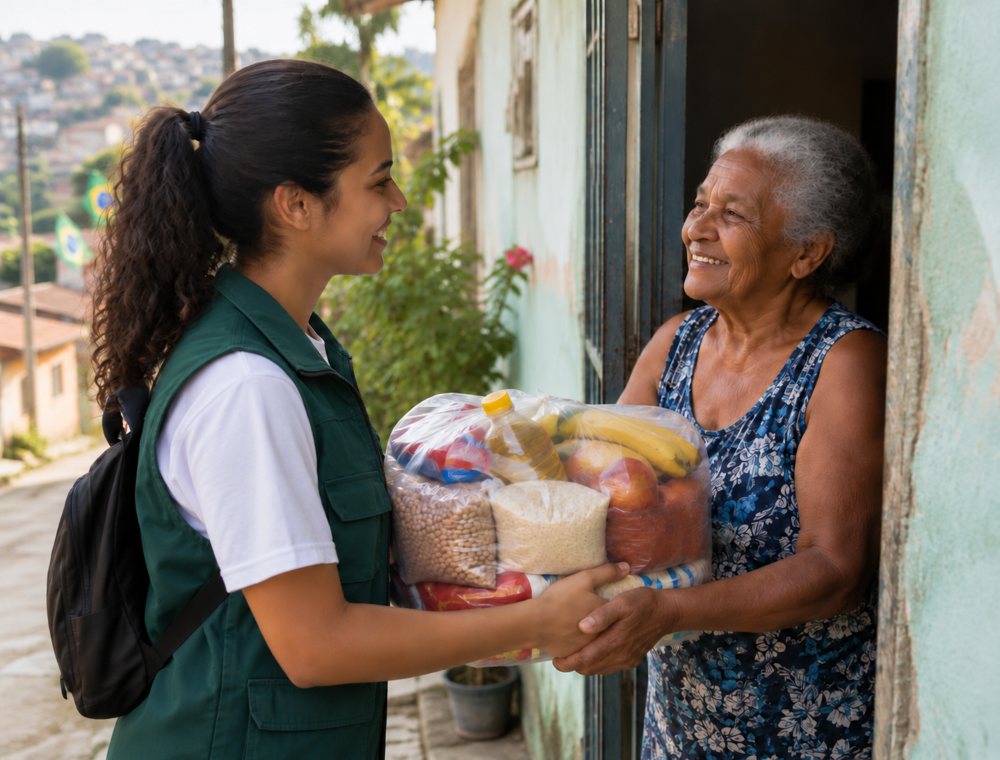
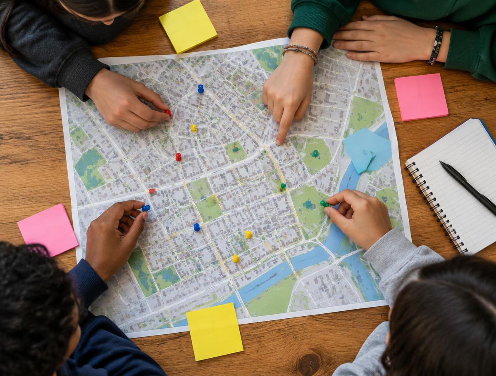
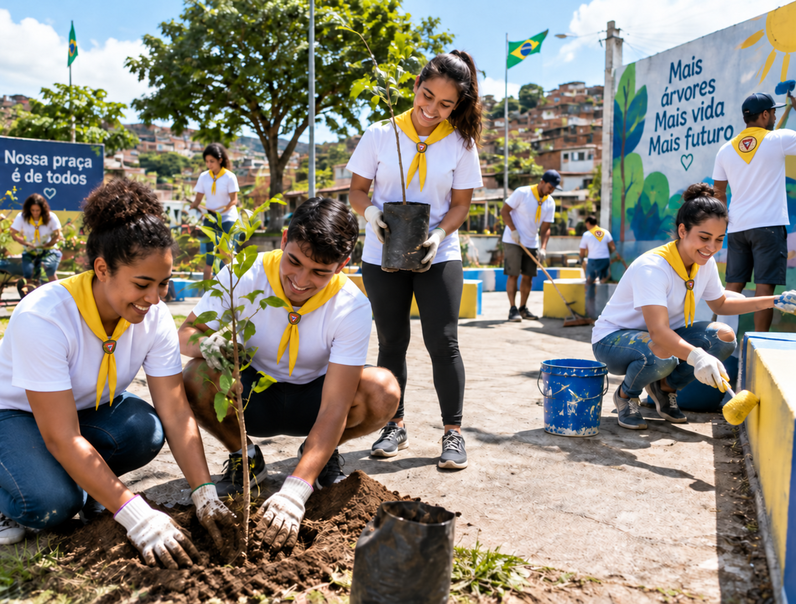
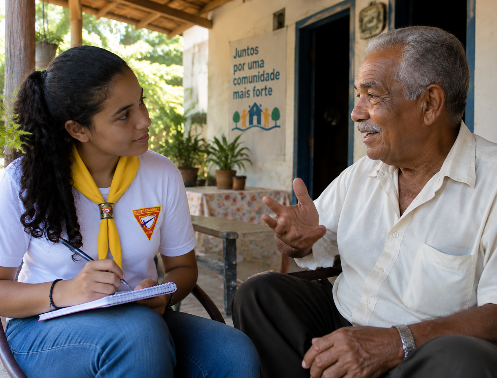
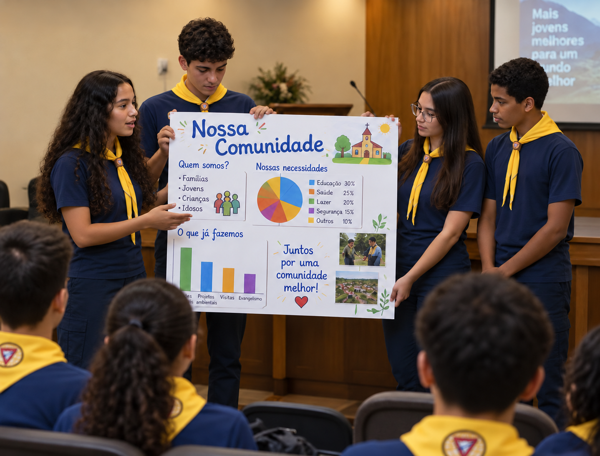
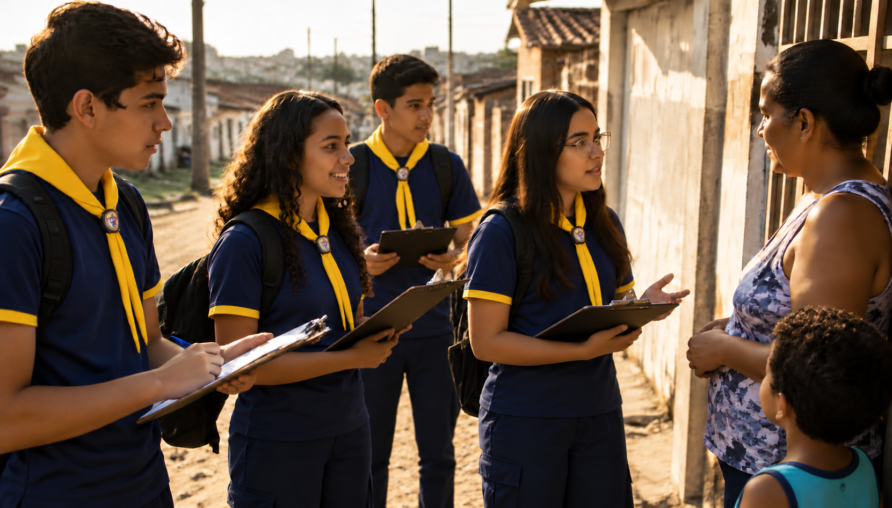

O primeiro censo do Brasil
O primeiro recenseamento geral do Brasil foi em 1872, ainda no Império, e contou cerca de 9,9 milhões de pessoas. Hoje o IBGE faz o Censo, em geral a cada 10 anos.
Um guia completo sobre como mapear um bairro, entender quem vive nele, ouvir suas lideranças e descobrir onde o seu clube pode fazer diferença de verdade.
Toda boa ação humanitária começa com um diagnóstico. Organizações como a ADRA, a Cruz Vermelha e as agências da ONU sempre fazem uma avaliação de necessidades antes de agir: elas querem saber quem vive no lugar, do que essas pessoas precisam e o que já existe por ali.
A especialidade ensina o desbravador a fazer exatamente isso no próprio bairro. O resultado é um retrato honesto da comunidade, com números, histórias e prioridades, que vira a base para projetos de serviço que fazem sentido de verdade.
Jesus fazia o mesmo: andava pelas cidades e aldeias, via as multidões e se compadecia delas (Mateus 9:35-36). Primeiro Ele olhava, depois agia.


Escolha um lugar que você conheça bem: o bairro onde mora, a região em volta da igreja ou da escola. Defina os limites (quais ruas, avenidas, rios ou praças fecham a área) e mostre isso em um mapa.
Mapa digital: no Google Maps, crie um mapa personalizado no Google My Maps, desenhe o contorno do bairro e marque escolas, postos de saúde, igrejas, praças, comércios e pontos de risco. O OpenStreetMap é uma alternativa gratuita e colaborativa.
Mapa físico: imprima o mapa ou desenhe à mão em uma cartolina, use legendas com cores e cole fotos dos lugares mais importantes.
Inclua também a referência geográfica: município, estado, zona (urbana ou rural), coordenadas aproximadas e o acesso por transporte público.
Um bom diagnóstico junta dados oficiais e observação pessoal. Veja o que levantar em cada tema e onde encontrar as informações:
Número de habitantes, distribuição por sexo e faixa etária (crianças, jovens, adultos, idosos) e número de domicílios.
Renda média das famílias, tipo de moradia, saneamento básico (água, esgoto, coleta de lixo), energia elétrica, internet e famílias atendidas por programas sociais.
Como as pessoas ganham a vida: comércio, serviços, indústria, construção civil, agricultura, trabalho doméstico, empregos informais e autônomos. Observe também o desemprego.
Quantas creches, escolas de ensino fundamental e médio, cursos técnicos e faculdades existem por perto e se são públicas ou particulares. Qual a distância e como os alunos chegam até lá?
Unidades Básicas de Saúde (UBS), equipes de Saúde da Família, UPA, hospitais, farmácias e atendimento psicológico (CAPS). Há fila? Falta médico?
Taxa de alfabetização, escolaridade média dos adultos, evasão escolar e nota do IDEB das escolas do bairro.
Índices de furtos, roubos e violência, iluminação pública, policiamento, áreas consideradas perigosas e sensação de segurança dos moradores.
Áreas de lazer e esporte, transporte público, igrejas e ONGs atuantes, meio ambiente (arborização, enchentes, lixo), cultura local, história do bairro e líderes comunitários.
Use esta ficha como modelo para organizar o que a sua unidade descobrir. Os valores abaixo são fictícios, só para mostrar como preencher.
| Tema | O que encontramos | Fonte |
|---|---|---|
| Localização | Bairro Jardim Esperança, zona leste, limitado pela Av. Brasil, Rua das Flores e o córrego Bonito | Google My Maps |
| Demografia | ≈ 12.400 habitantes · 52% mulheres · 22% até 14 anos · 13% com 60+ | Censo 2022 (IBGE) |
| Socioeconômico | Renda média de 1,5 salário mínimo; 30% das famílias no CadÚnico; esgoto em 80% das casas | CRAS / IBGE |
| Trabalho | Comércio, construção civil, serviços domésticos e aplicativos de entrega | Entrevistas |
| Educação e saúde | 3 escolas municipais, 1 estadual, 1 creche; 1 UBS com 4 equipes de Saúde da Família | Secretarias municipais |
| Escolaridade | IDEB 5,1 nos anos iniciais; muitos adultos sem o ensino médio completo | INEP |
| Segurança | Furtos frequentes perto do terminal; praça mal iluminada à noite | Moradores / PM |
| Outros | Pontos de alagamento na chuva; poucas opções de lazer para adolescentes | Observação da unidade |
“Quem não vive para servir não serve para viver.”Ideal de serviço dos Desbravadores
Depois de reunir os dados, a unidade deve caminhar pelo bairro, conversar com as pessoas e fazer uma lista das necessidades reais. Vale anotar tudo, das maiores às mais simples. Algumas das que mais aparecem nas comunidades brasileiras:

Converse com alguém que conheça a comunidade a fundo: um líder comunitário ou presidente de associação de moradores, um professor ou diretor de escola, um pastor ou um policial. O objetivo é descobrir como jovens como você podem causar um impacto positivo ali.
Marque a conversa com antecedência, vá de uniforme acompanhado por um conselheiro, leve caderno e caneta e, se a pessoa autorizar, grave o áudio. Depois, agradeça e conte como as respostas vão ser usadas.

Deixe a pessoa falar. As melhores informações costumam surgir quando a conversa já está no meio.
Registre frases importantes, nomes, números e sugestões. Elas vão enriquecer o relatório.
Pontualidade, educação e sigilo quando o assunto for delicado. Você está representando o clube.
Se der, entreviste duas pessoas diferentes. Um policial e um professor enxergam o bairro de jeitos diferentes.

Agora é hora de apresentar ao Clube de Desbravadores tudo o que vocês descobriram e, principalmente, o que aprenderam sobre a comunidade. Usem a criatividade:
Cartaz ou mural, slides, vídeo-documentário, podcast, jornalzinho do bairro, exposição de fotos, maquete ou um teatro curto.
Mapa, dados com gráficos, fotos, trechos da entrevista, lista de necessidades e as lições que vocês tiraram.
Números informam, mas histórias tocam o coração. Inclua o relato (com autorização) de algum morador.
Feche com um projeto concreto que o clube possa abraçar.
Escolha as prioridades pensando no impacto (quantas pessoas são beneficiadas), na urgência e na viabilidade (o que o clube realmente consegue fazer). Algumas ideias:
| Melhoria necessária | O que o desbravador pode fazer |
|---|---|
| Segurança alimentar das famílias | Campanha de arrecadação de alimentos, horta comunitária e parceria com a ADRA local |
| Cuidado com os idosos | Adotar um idoso: visitas semanais, leitura, ajuda com compras e cartões em datas especiais |
| Bairro mais limpo | Mutirão de limpeza, combate aos focos de dengue, oficina de reciclagem e lixeiras em pontos-chave |
| Crianças fora de risco | Reforço escolar, gincanas, Clube de Aventureiros e Escola Cristã de Férias |
| Praças e espaços públicos | Pintar bancos e muros, plantar árvores e pedir à prefeitura mais iluminação |
| Saúde e prevenção | Feira de saúde com aferição de pressão (com profissionais), palestras sobre hábitos saudáveis e campanha de vacinação |
| Pessoas em situação de rua | Campanha do agasalho, kits de higiene e sopa solidária junto com a igreja |
| Cidadania | Levar as demandas ao vereador, à subprefeitura ou à associação de moradores por meio de abaixo-assinado |

O primeiro recenseamento geral do Brasil foi em 1872, ainda no Império, e contou cerca de 9,9 milhões de pessoas. Hoje o IBGE faz o Censo, em geral a cada 10 anos.
A Agência Adventista de Desenvolvimento e Recursos Assistenciais nasceu em 1956 com outro nome (SAWS) e adotou o nome ADRA em 1983. Hoje atua em mais de 100 países.
O Índice de Desenvolvimento Humano vai de 0 a 1 e combina três dimensões: saúde (expectativa de vida), educação e renda. No Brasil existe o IDH de cada município.
O IBGE divide o país em centenas de milhares de pequenas áreas chamadas setores censitários. Você pode consultar dados de um pedaço do seu bairro!
ONGs usam o “DRP”, ou Diagnóstico Rápido Participativo, em que os próprios moradores desenham mapas e apontam problemas. É exatamente o espírito desta especialidade.
Entre 2010 e 2022, a população com 60 anos ou mais cresceu mais de 50%. Cuidar de idosos é uma necessidade cada vez maior nas comunidades.
Ao terminar esta especialidade, sua unidade terá nas mãos um retrato vivo da comunidade e um plano para servi-la. Ela combina muito bem com as especialidades de Serviço Comunitário, Evangelismo Pessoal e as demais da área ADRA.